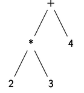
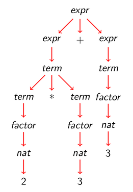
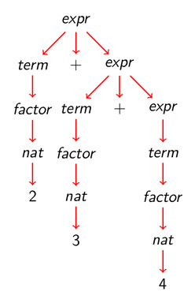

Tema 12: Analizadores sintácticos funcionales
Índice
1 Analizadores sintácticos
- Un analizador sintáctico es un programa que analiza textos para determinar su estructura sintáctica.
- Ejemplo de análisis sintáctico aritmético: La estructura sintáctica de la
cadena
"2*3+4"es el árbol  - El análisis sintáctico forma parte del preprocesamiento en la mayoría de las aplicaciones reales.
2 El tipo de los analizadores sintácticos
Opción inicial:
type Analizador = String -> Tree
Con la parte no analizada:
type Analizador = String -> (Tree,String)
Con todos los análisis:
type Analizador = String -> [(Tree,String)]
Con estructuras arbitrarias:
type Analizador a = String -> [(a,String)]
- Simplificación: analizadores que fallan o sólo dan un análisis.
3 Analizadores sintácticos básicos
(analiza a cs)analiza la cadenacsmediante el analizadora. Por ejemplo,analiza :: Analizador a -> String -> [(a,String)] analiza a cs = a cs
El analizador
resultado vsiempre tiene éxito, devuelvevy no consume nada. Por ejemplo,λ> analiza (resultado 1) "abc" [(1,"abc")]
Su definición es
resultado :: a -> Analizador a resultado v = \xs -> [(v,xs)]
El analizador
fallosiempre falla. Por ejemplo,λ> analiza fallo "abc" []
Su definición es
fallo :: Analizador a fallo = \xs -> []
El analizador
elementofalla si la cadena es vacía y consume el primer elemento en caso contrario. Por ejemplo,λ> analiza elemento "" [] λ> analiza elemento "abc" [('a',"bc")]Su definición es
elemento :: Analizador Char elemento = \xs -> case xs of [] -> [] (x:xs) -> [(x , xs)]
4 Composición de analizadores sintácticos
4.1 Secuenciación de analizadores sintácticos
((p >*> f) e)falla si el análisis deeporpfalla, en caso contrario, se obtiene un valor (v) y una salida (s), se aplica la funciónfal valorvobteniéndose un nuevo analizador con el que se analiza la salidas.infixr 5 >*> (>*>) :: Analizador a -> (a -> Analizador b) -> Analizador b p >*> f = \ent -> case analiza p ent of [] -> [] [(v,sal)] -> analiza (f v) sal
primeroTerceroes un analizador que devuelve los caracteres primero y tercero de la cadena. Por ejemplo,primeroTercero "abel" == [(('a','e'),"l")] primeroTercero "ab" == []Su definición es
primeroTercero :: Analizador (Char,Char) primeroTercero = elemento >*> \x -> elemento >*> \_ -> elemento >*> \y -> resultado (x,y)
4.2 Elección de analizadores sintácticos
((p +++ q) e)analizaeconpy si falla analizaeconq. Por ejemplo,λ> analiza (elemento +++ resultado 'd') "abc" [('a',"bc")] λ> analiza (fallo +++ resultado 'd') "abc" [('d',"abc")] λ> analiza (fallo +++ fallo) "abc" []Su definición es
(+++) :: Analizador a -> Analizador a -> Analizador a p +++ q = \ent -> case analiza p ent of [] -> analiza q ent [(v,sal)] -> [(v,sal)]
5 Primitivas derivadas
(sat p)es el analizador que consume un elemento si dicho elemento cumple la propiedadpy falla en caso contrario. Por ejemplo,analiza (sat isLower) "hola" == [('h',"ola")] analiza (sat isLower) "Hola" == []Su definición es
sat :: (Char -> Bool) -> Analizador Char sat p = elemento >*> \x -> if p x then resultado x else fallo
digitoanaliza si el primer carácter es un dígito. Por ejemplo,analiza digito "123" == [('1',"23")] analiza digito "uno" == []Su definición es
digito :: Analizador Char digito = sat isDigit
minusculaanaliza si el primer carácter es una letra minúscula. Por ejemplo,analiza minuscula "eva" == [('e',"va")] analiza minuscula "Eva" == []Su definición es
minuscula :: Analizador Char minuscula = sat isLower
mayusculaanaliza si el primer carácter es una letra mayúscula. Por ejemplo,analiza mayuscula "Eva" == [('E',"va")] analiza mayuscula "eva" == []Su definición es
mayuscula :: Analizador Char mayuscula = sat isUpper
letraanaliza si el primer carácter es una letra. Por ejemplo,analiza letra "Eva" == [('E',"va")] analiza letra "eva" == [('e',"va")] analiza letra "123" == []Su definición es
letra :: Analizador Char letra = sat isAlpha
alfanumericoanaliza si el primer carácter es una letra o un número. Por ejemplo,analiza alfanumerico "Eva" == [('E',"va")] analiza alfanumerico "eva" == [('e',"va")] analiza alfanumerico "123" == [('1',"23")] analiza alfanumerico " 123" == []Su definición es
alfanumerico :: Analizador Char alfanumerico = sat isAlphaNum
(caracter x)analiza si el primer carácter es igual al carácterx. Por ejemplo,analiza (caracter 'E') "Eva" == [('E',"va")] analiza (caracter 'E') "eva" == []Su definición es
caracter :: Char -> Analizador Char caracter x = sat (== x)
(cadena c)analiza si empieza con la cadenac. Por ejemplo,analiza (cadena "abc") "abcdef" == [("abc","def")] analiza (cadena "abc") "abdcef" == []Su definición es
cadena :: String -> Analizador String cadena [] = resultado [] cadena (x:xs) = caracter x >*> \x -> cadena xs >*> \xs -> resultado (x:xs)
varios paplica el analizadorpcero o más veces. Por ejemplo,analiza (varios digito) "235abc" == [("235","abc")] analiza (varios digito) "abc235" == [("","abc235")]Su definición es
varios :: Analizador a -> Analizador [a] varios p = varios1 p +++ resultado []
varios1 paplica el analizadorpuna o más veces. Por ejemplo,analiza (varios1 digito) "235abc" == [("235","abc")] analiza (varios1 digito) "abc235" == []Su definición es
varios1 :: Analizador a -> Analizador [a] varios1 p = p >*> \v -> varios p >*> \vs -> resultado (v:vs)
identanaliza si comienza con un identificador (i.e. una cadena que comienza con una letra minúscula seguida por caracteres alfanuméricos). Por ejemplo,λ> analiza ident "lunes12 de Ene" [("lunes12"," de Ene")] λ> analiza ident "Lunes12 de Ene" []Su definición es
ident :: Analizador String ident = minuscula >*> \x -> varios alfanumerico >*> \xs -> resultado (x:xs)
natanaliza si comienza con un número natural. Por ejemplo,analiza nat "14DeAbril" == [(14,"DeAbril")] analiza nat " 14DeAbril" == []
Su definición es
nat :: Analizador Int nat = varios1 digito >*> \xs -> resultado (read xs)
espacioanaliza si comienza con espacios en blanco. Por ejemplo,analiza espacio " a b c" == [((),"a b c")]
Su definición es
espacio :: Analizador () espacio = varios (sat isSpace) >*> \_ -> resultado ()
6 Tratamiento de los espacios
unidad pignora los espacios en blanco y aplica el analizadorp. Por ejemplo,λ> analiza (unidad nat) " 14DeAbril" [(14,"DeAbril")] λ> analiza (unidad nat) " 14 DeAbril" [(14,"DeAbril")]
Su definición es
unidad :: Analizador a -> Analizador a unidad p = espacio >*> \_ -> p >*> \v -> espacio >*> \_ -> resultado v
identificadoranaliza un identificador ignorando los espacios delante y detrás. Por ejemplo,λ> analiza identificador " lunes12 de Ene" [("lunes12","de Ene")]Su definición es
identificador :: Analizador String identificador = unidad ident
naturalanaliza un número natural ignorando los espacios delante y detrás. Por ejemplo,analiza natural " 14DeAbril" == [(14,"DeAbril")]
Su definición es
natural :: Analizador Int natural = unidad nat
(simbolo xs)analiza la cadenaxsignorando los espacios delante y detrás. Por ejemplo,λ> analiza (simbolo "abc") " abcdef" [("abc","def")]Su definición es
simbolo :: String -> Analizador String simbolo xs = unidad (cadena xs)
listaNatanaliza una lista de naturales ignorando los espacios. Por ejemplo,λ> analiza listaNat " [ 2, 3, 5 ]" [([2,3,5],"")] λ> analiza listaNat " [ 2, 3,]" []
Su definición es
listaNat :: Analizador [Int] listaNat = simbolo "[" >*> \_ -> natural >*> \n -> varios (simbolo "," >*> \_ -> natural) >*> \ns -> simbolo "]" >*> \_ -> resultado (n:ns)
7 Analizador de expresiones aritméticas
7.1 Expresiones aritméticas
- Consideramos expresiones aritméticas:
- construidas con números, operaciones (
+y*) y paréntesis. +y*asocian por la derecha.*tiene más prioridad que+.
- construidas con números, operaciones (
- Ejemplos:
2+3+5representa a2+(3+5).2*3+5representa a(2*3)+5.
7.2 Gramáticas de las expresiones aritméticas: Gramática 1
Gramática 1 de las expresiones aritméticas:
expr ::= expr + expr | expr * expr | (expr) | nat nat ::= 0 | 1 | 2 | ...
- La gramática 1 no considera prioridad: acepta
2+3*5como(2+3)*5y como2+(3*5) - La gramática 1 no considera asociatividad: acepta
2+3+5como(2+3)+5y como2+(3+5) - La gramática 1 es ambigua.
7.3 Gramáticas de las expresiones aritméticas: Gramática 2
Gramática 2 de las expresiones aritméticas (con prioridad):
expr ::= expr + expr | term term ::= term * term | factor factor ::= (expr) | nat nat ::= 0 | 1 | 2 | ...
- La gramática 2 sí considera prioridad: acepta
2+3*5sólo como2+(3*5) - La gramática 2 no considera asociatividad: acepta
2+3+5como(2+3)+5y como2+(3+5) - La gramática 2 es ambigua.
7.4 Árbol de análisis sintáctico de 2*3+5 con la gramática 2

7.5 Gramáticas de las expresiones aritméticas: Gramática 3
Gramática 3 de las expresiones aritméticas:
expr ::= term + expr | term term ::= factor * term | factor factor ::= (expr) | nat nat ::= 0 | 1 | 2 | ...
- La gramática 3 sí considera prioridad: acepta
2+3*5sólo como2+(3*5) - La gramática 3 sí considera asociatividad: acepta
2+3+5como2+(3+5) - La gramática 3 no es ambigua (i.e. es libre de contexto).
7.6 Árbol de análisis sintáctico de 2+3+5 con la gramática 3

7.7 Gramáticas de las expresiones aritméticas: Gramática 4
La gramática 4 se obtiene simplificando la gramática 3:
expr ::= term (+ expr | ε) term ::= factor (* term | ε) factor ::= (expr) | nat nat ::= 0 | 1 | 2 | ...
donde ε es la cadena vacía.
- La gramática 4 no es ambigua.
- La gramática 4 es la que se usará para escribir el analizador de expresiones aritméticas.
7.8 Analizador de expresiones aritméticas
expranaliza una expresión aritmética devolviendo su valor. Por ejemplo,analiza expr "2*3+5" == [(11,"")] analiza expr "2*(3+5)" == [(16,"")] analiza expr "2+3*5" == [(17,"")] analiza expr "2*3+5abc" == [(11,"abc")]
Su definición es
expr :: Analizador Int expr = term >*> \t -> (simbolo "+" >*> \_ -> expr >*> \e -> resultado (t+e)) +++ resultado t
termanaliza un término de una expresión aritmética devolviendo su valor. Por ejemplo,analiza term "2*3+5" == [(6,"+5")] analiza term "2+3*5" == [(2,"+3*5")] analiza term "(2+3)*5+7" == [(25,"+7")]
Su definición es
term :: Analizador Int term = factor >*> \f -> (simbolo "*" >*> \_ -> term >*> \t -> resultado (f*t)) +++ resultado f
factoranaliza un factor de una expresión aritmética devolviendo su valor. Por ejemplo,analiza factor "2*3+5" == [(2,"*3+5")] analiza factor "(2+3)*5" == [(5,"*5")] analiza factor "(2+3*7)*5" == [(23,"*5")]
Su definición es
factor :: Analizador Int factor = (simbolo "(" >*> \_ -> expr >*> \e -> simbolo ")" >*> \_ -> resultado e) +++ natural
(valor cs)analiza la cadenacsdevolviendo su valor si es una expresión aritmética y un mensaje de error en caso contrario. Por ejemplo,valor "2*3+5" == 11 valor "2*(3+5)" == 16 valor "2 * 3 + 5" == 11 valor "2*3x" == *** Exception: sin usar x valor "-1" == *** Exception: entrada no valida
Su definición es
valor :: String -> Int valor xs = case (analiza expr xs) of [(n,[])] -> n [(_,sal)] -> error ("sin usar " ++ sal) [] -> error "entrada no valida"
8 Otras presentaciones
Este tema también se encuentra en los siguientes formatos:
9 Bibliografía
- R. Bird. Introducción a la programación funcional con Haskell. Prentice Hall, 2000.
- Cap. 11: Análisis sintáctico.
- G. Hutton. Programming in Haskell. Cambridge University Press, 2007.
- Cap. 8: Functional parsers.
- G. Hutton y E. Meijer. Monadic parser combinators. Technical Report NOTTCS-TR-96-4, Department of Computer Science, University of Nottingham, 1996.
- G. Hutton y E. Meijer. Monadic parsing in Haskell. Journal of Functional Programming, 8(4): 437-444, 1998.
- B.C. Ruiz, F. Gutiérrez, P. Guerrero y J.E. Gallardo. Razonando con Haskell.
Thompson, 2004.
- Cap. 14: Analizadores.